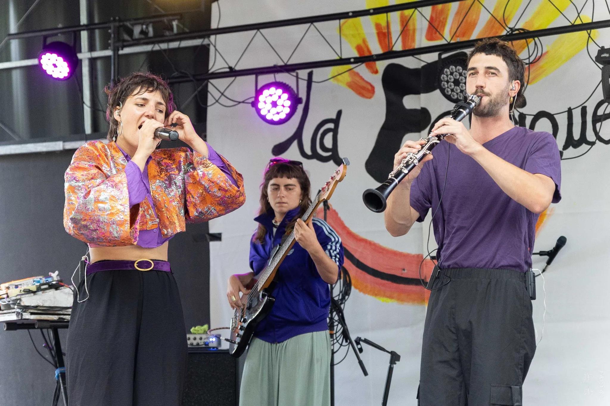
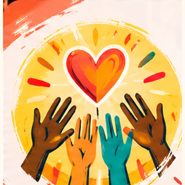
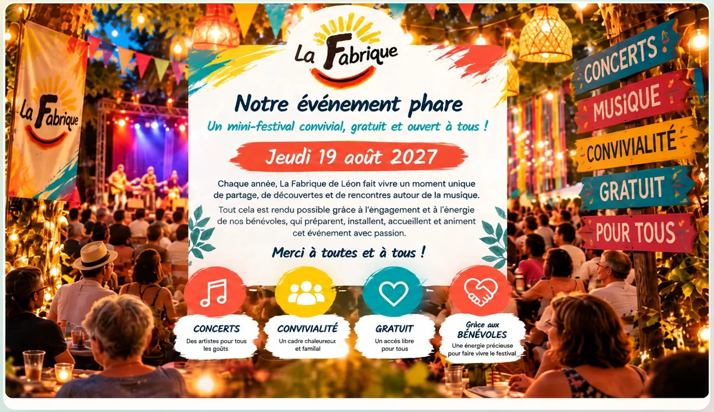
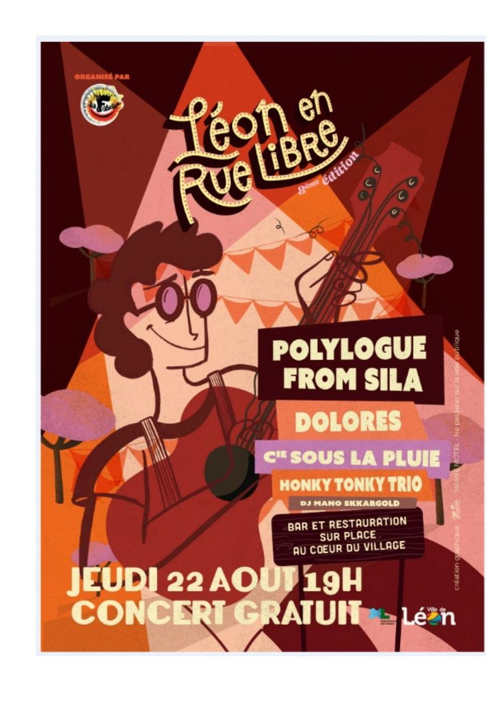
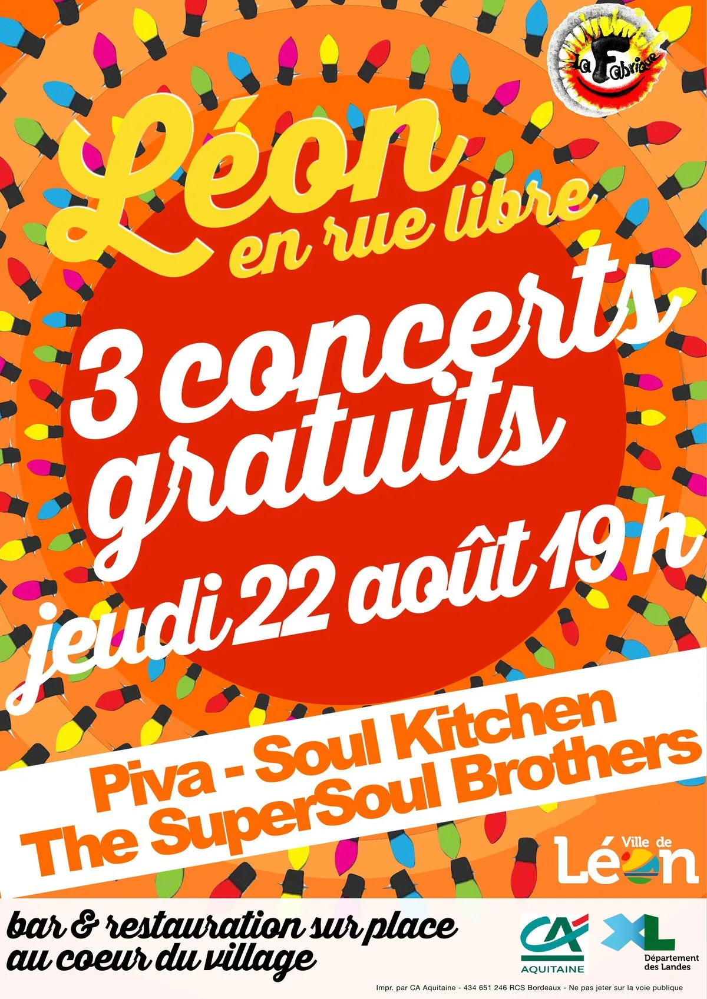
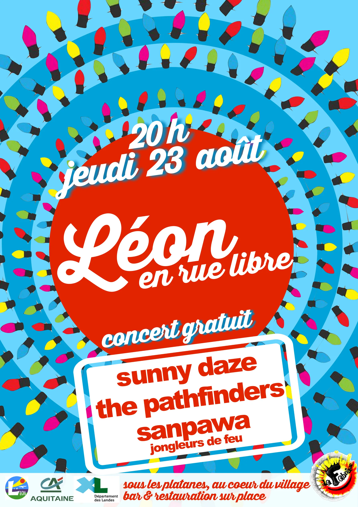
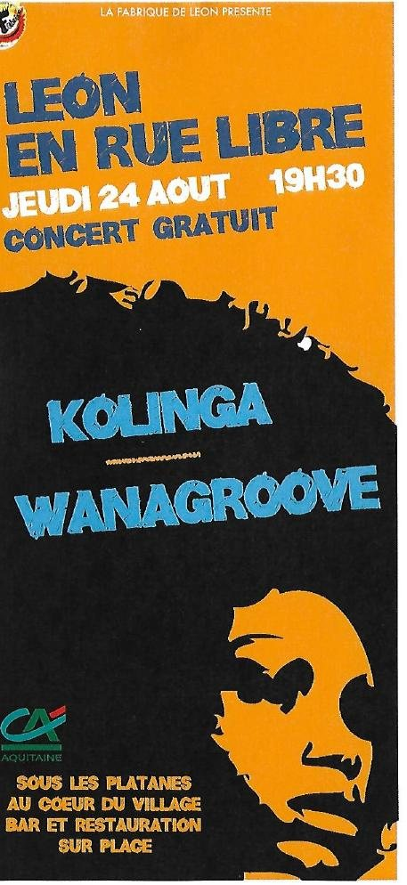
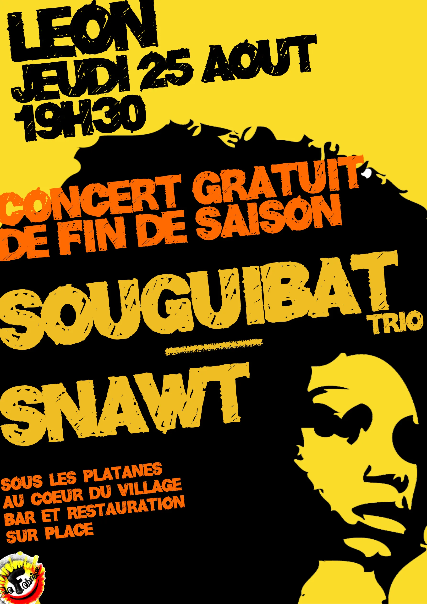
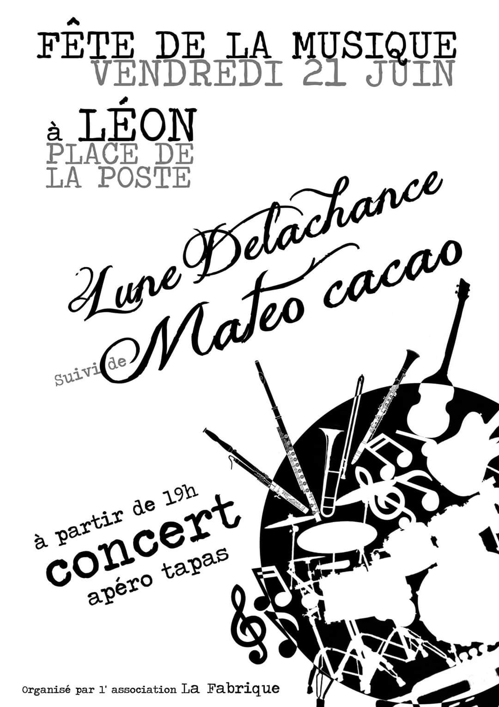

DON EN LIGNE
Faire un don
Scanner le QR codeFaire un don
à La Fabrique
Contribuez au maintien des concerts et spectacles gratuits.
Je fais un don en lignepour faire un don
Pour une culture libre, joyeuse et accessible à tous !
Léon en Rue Libre — concerts et spectacles gratuits pour le public.
Depuis 2013, une association 100 % bénévole fait vivre la culture, la musique, les spectacles vivants et la convivialité au cœur du village.

Concerts, artistes, souvenirs et vie associative : choisissez ce qui vous intéresse et découvrez la suite.

Envie de donner un coup de main avant ou pendant le festival ? Rejoignez notre équipe de bénévoles !
Je rejoins l’équipe
Parcourez les éditions en un coup d’œil : cliquez sur une affiche pour l’agrandir.

2024
2019La liste des artistes de cette édition reste à compléter dans les archives.

2018
2017La liste des artistes de cette édition reste à compléter dans les archives.

2016
2013Choisissez une année pour découvrir les photos, les concerts et les moments de convivialité de La Fabrique.
 2026 Voir les photos ↓
2026 Voir les photos ↓

 2024 Voir les photos ↓
2024 Voir les photos ↓
 2022 Voir les photos ↓
2022 Voir les photos ↓
 Archives Voir les photos ↓
Archives Voir les photos ↓
Des concerts, des artistes, des spectacles vivants et des moments partagés, gratuits pour tous.
Votre don nous aide à faire vivre cette aventure.
Contribuez au maintien des concerts et spectacles gratuits.
Je fais un don en ligneRetrouvez le formulaire correspondant à votre situation pour bénéficier des avantages fiscaux.
Téléchargez le PDF puis ouvrez-le dans un lecteur compatible, par exemple Adobe Acrobat Reader. Si le document ne permet pas la saisie, imprimez-le ou utilisez le formulaire officiel de l’administration.
La Fabrique de Léon relève du régime des articles 200 et 238 bis du Code général des impôts, selon le rescrit fiscal du 12 avril 2023. Les réductions d’impôt dépendent des conditions légales applicables.
Consulter notre rescrit fiscal →